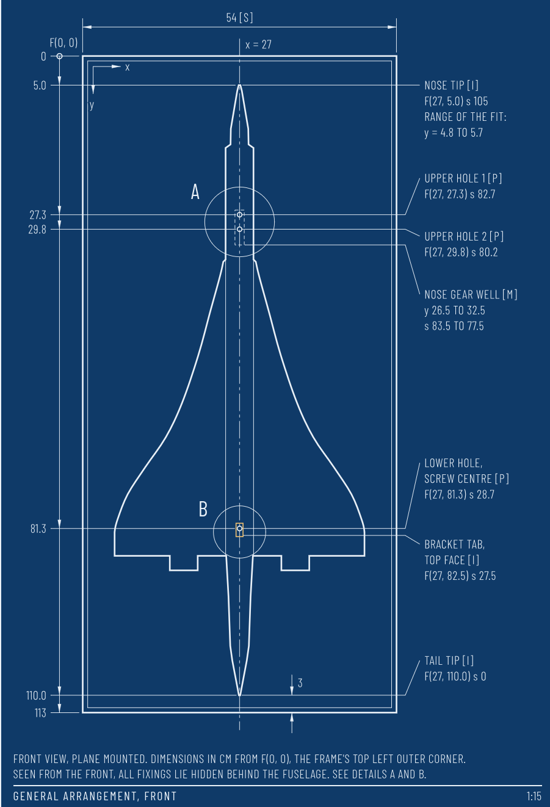

LEGO Concorde 10318 on a wall frame: mounting procedure
This article describes how the LEGO Concorde 10318 is mounted on a Mark's Magic wall display frame. The frame ships without written instructions. The plane is mounted nose up with one L-bracket under the keel end and one cable tie in the nose gear well.
Frame
| Property | Value |
|---|---|
| Brand | Mark's Magic, design line "Mark's Magic x Stéphane Beilliard", sold through elevenmark.com |
| Seller of record | MARKSMAGIC LLC, Sheridan, Wyoming, USA. The factory is not named. |
| Size | 54 × 113 cm |
| Weight | 5 kg (maker's figure) |
| Build | Black aluminum profile, glossy printed acrylic panel |
| Artwork | "CONCORDE / AIR FRANCE" across the top, red delta with its tip 5 cm below the top edge |
| Fixing points | Three brass-sleeved holes on the vertical centerline |
| Instructions | None in the box. The maker publishes video links only. |
The identification can be confirmed by the maker's hidden anti-counterfeit label or by the seller name on the order.
Kit
| Quantity | Part |
|---|---|
| 1 | Steel L-bracket, 12 mm wide, legs 20 to 25 mm, one hole |
| 2 | Machine screws, M4 × 15, one with nut |
| 1 | White cable tie, 15 to 20 cm |
| 4 | Wall plugs, 6 × 30 mm, with 4 wood screws, 4 × 40 mm |
| 4 | Steel nails with red collars |
The kit includes no tools. The following tools are required: (1) a screwdriver, (2) pliers, (3) a side cutter, and (4) a drill with a 6 mm bit for the wall plugs.
Measurements
The plane is mounted nose up, with the nose tip on the tip of the red delta. The hole positions are accurate to ± 1 cm. The plane stations were read with a folding rule from the tail tip.

| Hole | Frame position (cm below top edge) | Plane station (cm from tail tip) | Feature behind it | Hardware |
|---|---|---|---|---|
| Upper pair | 27.3 and 29.8 | 80 to 83 | Nose gear well | Cable tie |
| Lower | 81.3 | 28 to 29 | End of the flat keel | L-bracket |
The stand socket (45 to 47 cm) and the tail bumper wheel (15 to 17 cm) are not used, as no hole reaches them. The engine nacelles rest on the panel, and the fuselage stands approximately 1.5 cm clear of it. The bracket tab bridges that gap.
Mounting procedure
- Prepare the plane: retract the landing gear, stow the tail bumper, and set the nose straight.
- Pass a machine screw through the L-bracket and the lower hole, and secure it with the nut behind the board. The tab must sit at the bottom and point outward.
- Lay the frame flat. Place the plane belly down, with the nose toward the lettering.
- Slide the plane toward the bottom edge until the tab drops into the groove where the last flat keel tile ends, 27.5 cm from the tail tip.
- Feed the cable tie from behind through one upper hole, around the retracted nose gear leg, and back through the other upper hole. Close it behind the board, snug but not tight, and cut off its excess end.
- Stand the frame against a wall and press the plane down by hand. Nothing may move.
- Hang the frame. On masonry, use the wall plugs and wood screws. Alternatively, use the steel nails.
Verification
- The nose tip sits on the tip of the red delta, 5 cm below the top edge. The tail tip sits 3 cm above the bottom edge.
- Both upper holes open into the nose gear well. If the upper hole misses the well, turn the bracket over so that the tab sits above the screw. The plane then sits 3 cm higher.
Limitations
- The groove is approximately 2 mm deep. The cable tie keeps the tab engaged.
- The tail cone must not be turned while the plane is mounted, as it drives the landing gear against the cable tie (Brickset review).
- The load on the wall is approximately 7 kg: 5 kg for the frame and 2 kg for the plane.
- The bracket seat and the tie route are derived from measurements and photos, not from the maker's video. A mounting guide by ICUANUTY shows the same tie route on a comparable frame.
References
- Mark's Magic x Stéphane Beilliard frame, product page: size, weight
- Mark's Magic instruction index: video links only
- ICUANUTY mounting guide: same tie route on a comparable frame
- Brickset review of 10318: landing gear driven by the tail cone